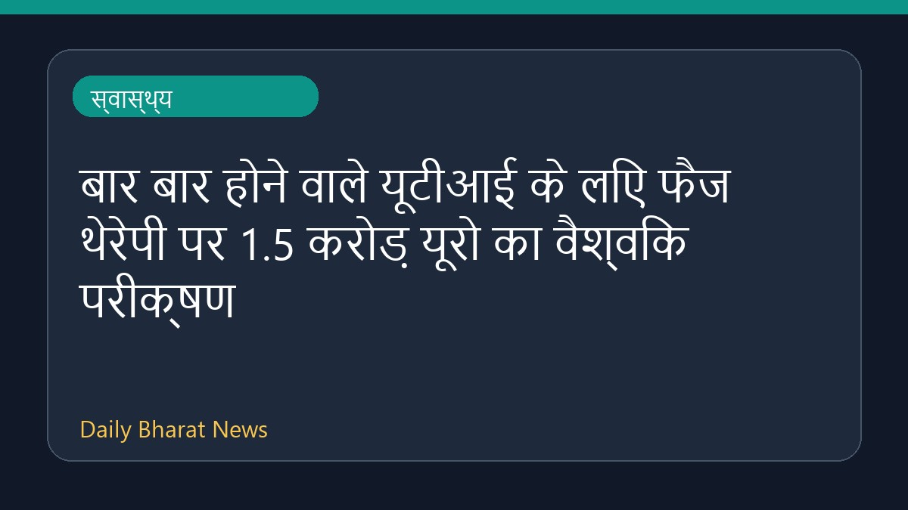

बार बार होने वाले यूटीआई के लिए फैज थेरेपी पर 1.5 करोड़ यूरो का वैश्विक परीक्षण

एंटीबायोटिक प्रतिरोध से निपटने और बार-बार होने वाले मूत्र पथ के संक्रमण की रोकथाम को बदलने के लिए एक बड़े नैदानिक परीक्षण की शुरुआत की गई है। इस वैश्विक परीक्षण में 1.5 करोड़ यूरो का निवेश किया गया है, जिसका उद्देश्य एंटीबायोटिक के विकल्प के रूप में फैज थेरेपी का परीक्षण करना है। रीडिंग यूनिवर्सिटी सहित कई संस्थान इस दिशा में काम कर रहे हैं। इस अध्ययन से जुड़े विवरण अभी सीमित हैं, लेकिन यह चिकित्सा क्षेत्र में एक महत्वपूर्ण कदम साबित हो सकता है।